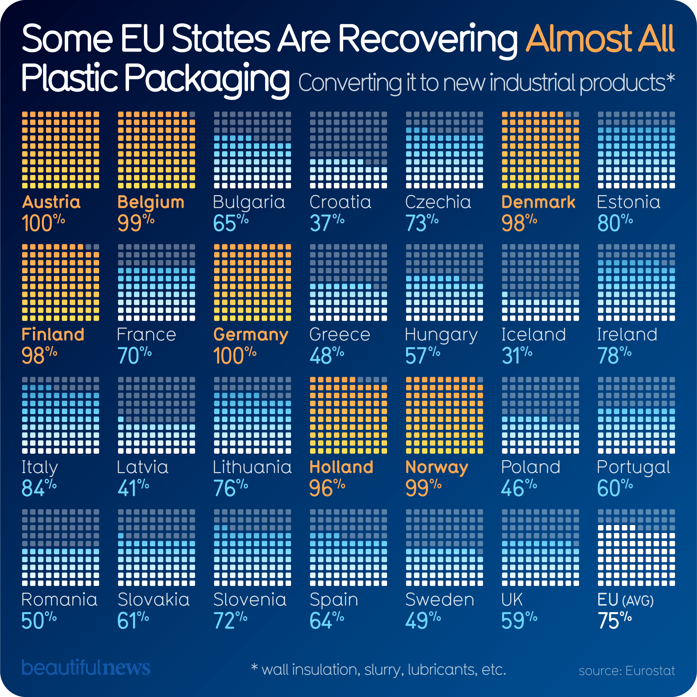

Visualization

Source: Information is Beautiful
Critique
Information Resolution
In the reading on page 142, Tufte says that some pictures "crunch and grind" big sets of data into "smaller lumps." That is exactly what is happening in this picture. The infographic looks like it has a lot of information because there are 28 different orange grids, but the resolution (which basically means the amount of real detail) is actually very low.
Each big orange box uses 100 little squares just to show one single number—a percentage. To me, this feels like a waste of space. It doesn’t show any of the "extra" details that actually matter, like if the plastic was turned into a brand-new product or just ground up into something low-quality. By squashing everything into one simple number per country, the picture hides the real story. Tufte argues that when you crunch data this much, it "fails to testify" (p. 142) about what is really happening in the world. I think a better version would have shown the different types of recovery so we could see the full picture.
Effects Without Causes
Tufte says that showing a result without showing the "how" or the "why" is a bad way to think. On page 142, he calls this showing "ends without means." Basically, the picture shows me the "end" (the big percentages) but it doesn't show me the "means" (the hard work, the laws, or the specific machines that made those numbers happen).
For example, look at Sweden. Its number looks really bad (49%) compared to a country like Germany (100%). If I just looked at the picture without reading the text, I’d think Sweden was doing a terrible job and didn't care about the Earth. But the article says the cause is that Sweden burns a lot of its plastic to create heat and energy for people's homes. The chart doesn't count that as "recovery," so Sweden looks bad even though they are actually being very green. Because the picture doesn't explain why the numbers are so different between countries, it creates what Tufte calls "causality from nowhere" (p. 142). It gives us the result but leaves out the actual reason.
Cherry-Picking
Tufte says cherry-picking is when people "pick and choose... only the evidence that advances their point of view" (p. 144). I think the people who made this picture cherry-picked the word "Recovered" because it makes the numbers look way better and "prettier" than they really are.
The article actually has a "correction" at the bottom that is very important. It says there is a "small but important difference" between recovery and recycling. This is a huge red flag for me. By choosing to show "recovery," the numbers stay high and look like amazing news. If they had shown actual "recycling" (which means actually reusing the plastic to make the same product again), the numbers would probably be a lot lower and not look as "beautiful." Tufte warns on page 147 that when people make reports, they often "select, sort, and massage" the data to make it look a certain way. This picture "massaged" the data by picking a broad word just to make sure the news looked happy and successful.
Conclusion
Even though the picture looks nice and uses bright colors, it's missing the most important part: the "why." By being too simple and cherry-picking a word that sounds good, the creators made what Tufte calls a "grand claim" (p. 150) that everything is perfect. In reality, the situation is way more complicated than just filling in a few orange squares on a page. I learned that you have to look past the "beautiful" part of the news to find the real evidence.